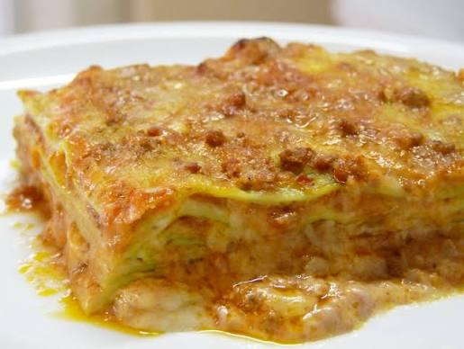

Home
Lasagna

Description
This is a delicious italian dish, made with ragù and pasta sheet, baked in oven.
Ingredients
For the ragù
- Ground beef 700 g
- Fresh bacon 270 g
- Celery 110 g
- Vegetable broth 350 g
- Double tomato concentrate 2 tbsp
- Salt as needed
- Tomato puree 350 g
- Carrots 110 g
- Onions 110 g
- Red wine 110 g
- Extra virgin olive oil 6 tbsp
- Black pepper as needed
For the béchamel sauce
- Wholi milk 800 g
- Flour 00 50 g
- Salt as needed
- Butter 50 g
- Nutmeg as needed
For the composition
- Lasagna sheets 500 g
- Parmigiano Reggiano 150 g
- Butter as needed
Steps
Ragù
- Trim and mince the onions, the celery and the carrots.
- Mince the bacon. Add the oil in a casserole.
- Once the oil is hot, add the bacon. Cook until the bacon is well browned.
- Add the vegetables and cook on low heat, stirring frequently. Turn up the heat and add the minced meat.
- Cook for about 10 minutes. Deglaze with the wine and let it evaporate, then add the tomato concentrate.
- Add the tomato puree and the hot broth. Keep cooking on low heat and a lid for about 2 hours.
- Halfway through cooking add salt and pepper.
Béchamel sauce
- Heat the milk in a small saucepan, without boiling it.
- In another pan melt the butter.
- Add the flour e cook for a few minutes, until you obtain a golden roux.
- Add the hot milk in 3 batches, stirring well.
- Add salt and nutmeg. Keep stirring until you have a creamy sauce.
- Transfer to a small bowl, cover with plastic wrap pressed directly against the surface, and set aside.
Composition
- Place a pot full of water on the stove and lightly salt it.
- When the water is boiling, add the lasagna sheet one at a time. After 30-40 seconds, drain it.
- Take a lasagna pan and put on the bottom a thin layer of béchamel sauce, then on of rahù.
- Put a lasagna sheet, a layer of béchamel and one of ragù. Distribute some of the grated Parmigiano.
- Put another lasagna sheet and continue in this way for 6 layers.
- After the last layer, cover with the remaing ragù and grated Parmigiano.
- Add small dollops of butter and bake in a preheated static oven at 170 °C for 40 minutes.
- The lasagna is ready!